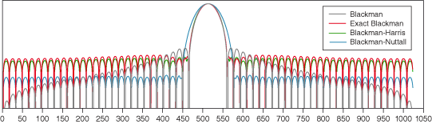

The Blackman-Nuttall window is a modified version of the Exact Blackman window. The following equation defines the Blackman-Nuttall window.
for n = 0, 1, 2, …, N - 1
where N is the length of the window and ω = 2πn/N
The following figure shows the Blackman-Nuttall window for N = 32.
The Blackman-Nuttall window is useful for single tone measurement. Among the Blackman, Exact Blackman, Blackman-Harris, and Blackman-Nuttall windows, the Blackman-Nuttall window has the widest main lobe and the lowest maximum side lobe level. The following figure shows the frequency spectrums of the Blackman, Exact Blackman, Blackman-Harris, and Blackman-Nuttall windows.
